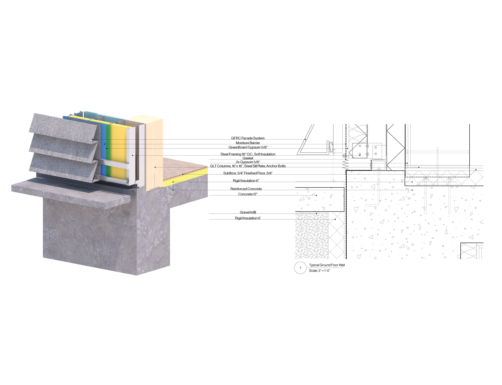
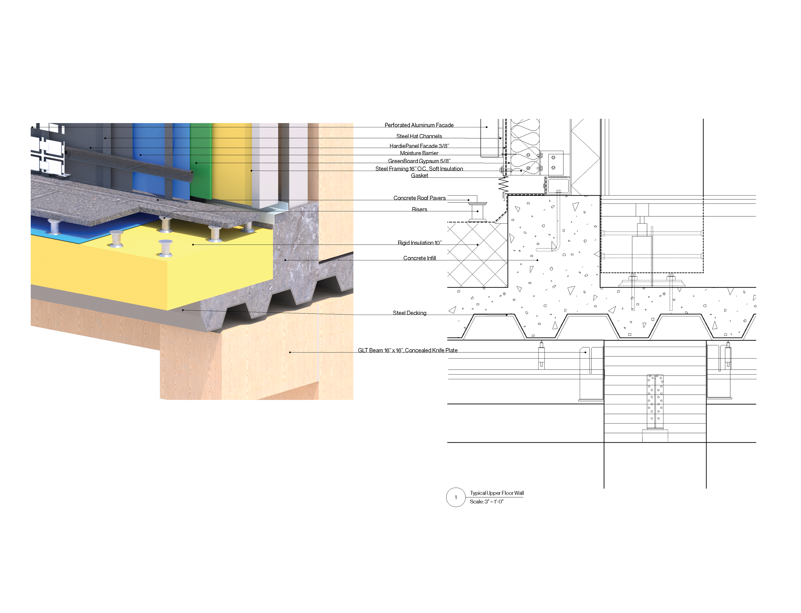
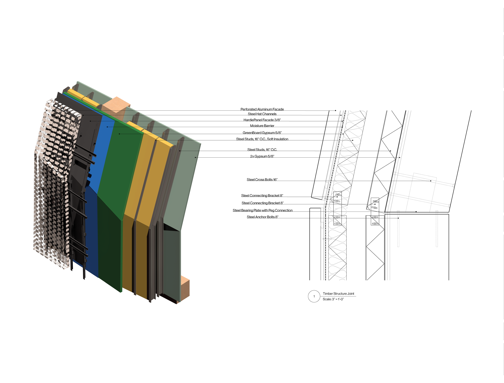
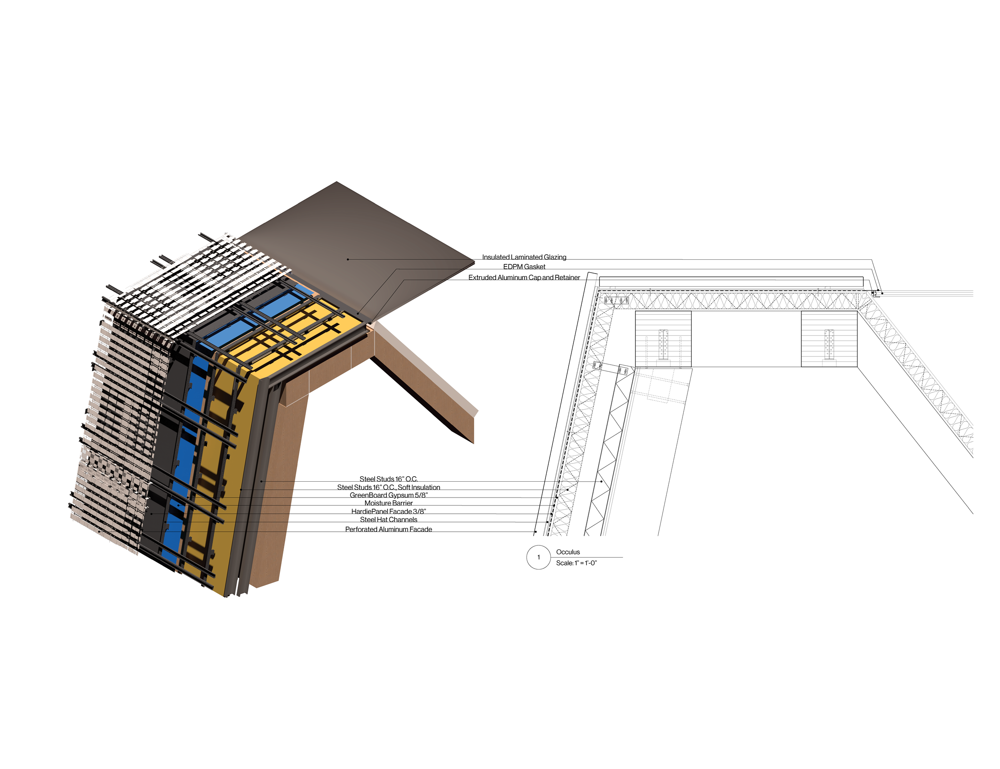

Design Documents
Herwig Baumgartner
Design Documents
This course studies the implementation of design, technology, and an understanding of building systems. Students are tasked with preparing Design Document drawings from a previous year's studio project and are asked to bring it to life with real-world materials, budgets, and environmental factors.



